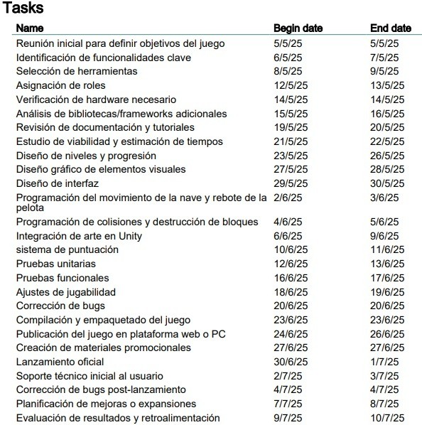
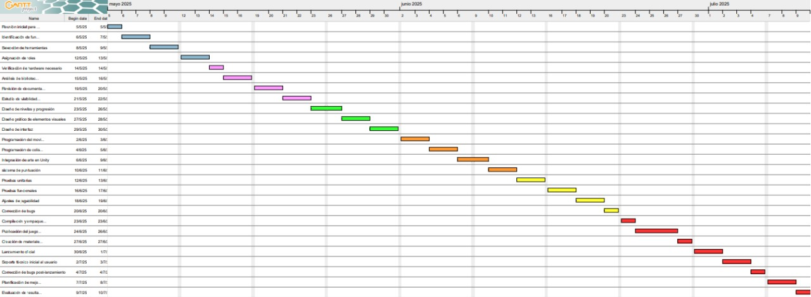

A continuación, se presenta el cronograma de tareas que vamos a cumplir en el desarrollo del videojuego inspirado en Arkanoid. Este listado incluye desde la planificación inicial, pasando por el diseño, programación, pruebas y publicación, hasta el soporte post-lanzamiento y la retroalimentación final. Cada tarea está organizada con su respectiva fecha de inicio y finalización, siguiendo un modelo de desarrollo en cascada para garantizar un flujo estructurado y eficiente.
La siguiente imagen muestra el cronograma del proyecto representado en un diagrama de Gantt, donde se visualiza de forma clara y ordenada cada una de las tareas a desarrollar. Esta planificación sigue el modelo en cascada, lo que permite ver la secuencia lógica de las actividades desde la concepción del videojuego hasta su lanzamiento y mantenimiento post-lanzamiento. Cada bloque de color representa una fase específica del proceso, lo que facilita el seguimiento del avance del proyecto.
El desarrollo del videojuego tipo Arkanoid fue llevado a cabo utilizando el modelo en cascada, lo que permitió una planificación estructurada y una ejecución ordenada de cada fase del proyecto. Desde la definición inicial hasta la entrega final, cada tarea fue desarrollada con claridad en los objetivos y tiempos establecidos. El uso del diagrama de Gantt facilitó la gestión del cronograma, el seguimiento de avances y la asignación efectiva de responsabilidades. Como resultado, logramos construir un juego funcional que replica fielmente la jugabilidad del original, integrando elementos visuales, físicos y de interacción. Este proyecto no solo cumplió con sus metas técnicas, sino que también fortaleció nuestras competencias en programación, diseño y organización de procesos de desarrollo.
El modelo de desarrollo de software en cascada es un enfoque secuencial que se basa en la finalización de una fase antes de pasar a la siguiente. Aunque es fácil de entender y aplicar, puede ser inflexible y no adaptarse bien a cambios en los requisitos. Por otro lado, el modelo iterativo permite revisiones y mejoras continuas, lo que lo hace más adecuado para proyectos donde los requisitos pueden evolucionar con el tiempo.
En resumen, la elección entre el modelo en cascada y el modelo iterativo depende de la naturaleza del proyecto y de la necesidad de flexibilidad en el desarrollo. Ambos modelos tienen sus ventajas y desventajas, y es importante considerar cuidadosamente cuál es el más adecuado para cada situación.
Alejandra Mejia
Joan Sebastian Sosa
Axel Gutierrez
Juan Diego Rojas